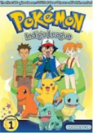
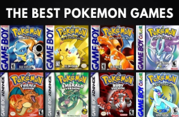
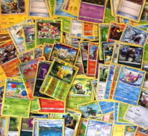

This is a website dedicated to the franchise of pokemon. Pokemon is a series which I personally am interested in, so I thought it'd be a good start for making websites. The pokemon website is split up into three ports, the show, the videogames, and the card game. I did not have as much time as I would have liked to create this site, but I am happy with it. :D
"Pokemon is one of the best franchises ever" Andrew Nickols 2020
Pokemon show
Plot
The great adventures of 10 year old Ash Ketchum, a young Pokémon Trainer from Pallet Town, as well as his best friend and everlasting companion Pikachu. Together, they venture through many regions: the traditional region of Kanto, the culturally rich Johto, the temperate region of Hoenn, the mystical region of Sinnoh, the advanced landscapes of Unova, Kalos, with it's many landmarks, and the splendor of the tropics of Alola. Along the way, they meet many new companions, many new friends and new rivals, while also competing in each regional league; as well as toppling evil organizations, and outsmarting the pesky and persistent Team Rocket. However, through all this, Ash's goal remains unchanged: to discover many new Pokémon, and to become regarded as the world's greatest Pokémon Master.
History
The anime first aired on April 1, 1997. The pokemon series has had 23 total seasons and 20 movies!
Pokémon is regarded as the most successful video game adaptation of all time, with over 1,000 episodes broadcast and adapted for international television markets,
concurrently airing in 169 countries worldwide, and now one of the most watched shows on Netflix
, as of 2016.
Pokemon video games
- Main title
- This is normally the first of that generation of pokemon. It will introduce new features, new pokemon, a new storyline, and many more unique features. These games are the heart of pokemon
- Derived titlee
- This is a title based on the main titles. They are in the same world and same generation. The story line can change, but the mechanics and style are normally similar.
- Upper Version
- This is an enhacned version of a main title. This game is normally the same pokemon and world and storyline. However, new features and extra content is added.
- Remake
- This is a remake of a main game. It copies the generation and story, but the animation and features are normally updated to similar timed releases.
What is a game?
The Categories
The pokemon games have released many titles over the years so this might be a hard question. However, each game has things that define it as a pokemon game. Nintendo typically releases the newest
game on the newest console avaible. Thus the console it can be played on can be seen as a time marker. It could also be defined by it's generation. Every few years pokemon gets a new generation. What this means is,
a new set of pokemon added to the pokemon universe (note this is for the games as well as the series). Each pokemon game could be seen as a main title, derivative title, upper version, or remake.
Each of these factors should tell alot about when it was made, and for most gamers, whether they would want to play it.
The story
The storyline of each main game is not the same but you will find some simularities. The game starts with a main character typically young in age. This character is just starting their pokemon journey. After learning the ropes, they are sent from town to town normally under the pretext of battling gym leaders, or collecting some sort of unique town item. Along the way they delve deeper into a evil plot of the bad guys (team skull). This eventually leads to the main character using there battle knowhow and pokemon to save the day.
List of releases
| System | Generation | Title | Release year | Game Version |
|---|---|---|---|---|
| Game Boy | First | Red & Green | 1996 | Main title |
| Game Boy | First | Blue | 1996 | Derivative title |
| Game Boy | First | Yellow | 1998 | Upper Version |
| Game Boy Color | Second | Gold & Silver | 1999 | Main title |
| Game Boy Color | Second | Crystal | 2000 | Upper version |
| Game Boy Advanced | Third | Ruby & Sapphire | 2002 | Main title |
| Game Boy Advanced | Third | Emerald | 2004 | Upper Version |
| Game Boy Advanced | First | FireRed & LeafGreen | 2004 | Remake |
| Nintendo DS | Fourth | Diamond & Pearl | 2006 | Main title |
| Nintendo DS | Fourth | Platinum | 2008 | Upper version |
| Nintendo DS | Second | HeartGold & SoulSilver | 2009 | Remake |
| Nintendo DS | Fifth | Black & White | 2010 | Main title |
| Nintendo DS | Fifth | Black 2 & White 2 | 2012 | Derivative title |
| Nintendo 3DS | Sixth | X & Y | 2013 | Main title |
| Nintendo 3DS | Third | Omega Ruby & Alpha Sapphire | 2014 | Remake |
| Nintendo 3DS & Switch | Seventh | Sun & Moon | 2016 | Main title |
| Nintendo 3DS & Switch | Seventh | Ultra Sun & Ultra Moon | 2017 | Upper version |
| Nintendo Switch | Seventh | Lets Go, Pikachu & Lets go Eevee! | 2018 | Remake |
| Nintendo Switch | Eight | Sword & Shield | 2019 | Main title |
| Nintendo Switch | Fourth | Max Diamond & Max Pearl | 2021? | Remake |
History
The series, originally produced for the company’s Game Boy line of handheld consoles, was introduced in 1998 to the United States with two titles, known to fans as Red and Blue. In the games, players assume the role of Pokémon trainers, obtaining cartoon monsters and developing them to battle other Pokémon. Pokémon became one of the most successful video game franchises in the world, second only to Nintendo’s Super Mario Bros.
Pokemon card game
The Birth
The pokemon card game was a trading card game built off the success of the anime and games. It has earned it's owned right as one of the categories because it's prominence in sales and household name. Many people collect the card's without ever watching the anime or playing the game. This shows the spread of this avenue to a different audience, ultimately serving as a wonderful collection for every pokemon that has existed.